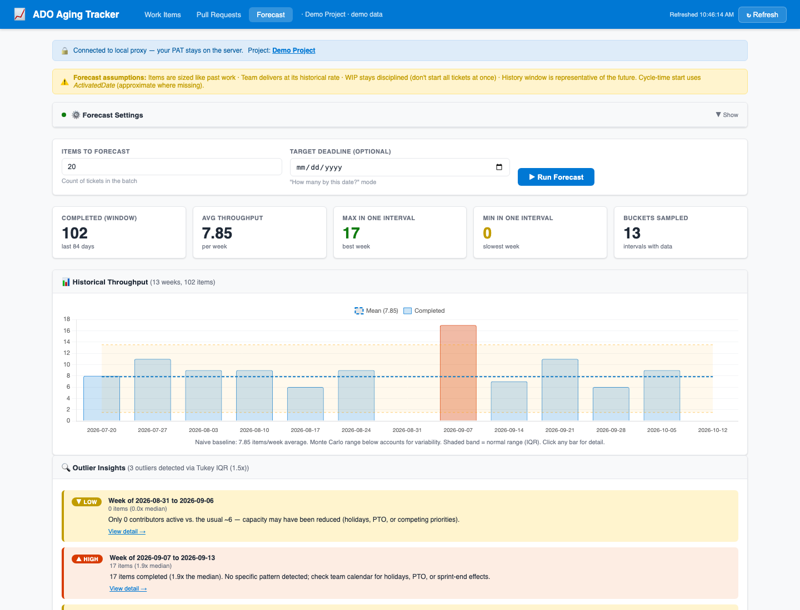

Five public repositories, each with tests and honest documentation. The flagship has a hosted demo,
so you can see it work before you read a line of code.

The tool behind the flow-analytics story on my résumé: WIP aging, PR aging and review state,
weekly throughput with outlier detection, cycle-time percentiles, and Monte Carlo delivery
forecasting ("20 tickets: 85% confident by Nov 9"). Every flagged week has an "Explain with AI"
button backed by Claude, and the explanation feature ships with its own eval harness.
Live demo (no install, synthetic team data) ·
source.
Case study
- Built for a real team, then generalized: my 20-engineer team had boards that showed status but not age. This made aging visible, and the WIP-limit and PR-aging policies it surfaced are the ones the team adopted. The open-source version swaps the live client for a seeded fake behind the same request seam, so demo mode exercises every real route.
- Forecasting without estimates: Monte Carlo sampling over the team's own weekly throughput gives p50/p70/p85/p95 finish dates; outlier weeks are flagged with a Tukey IQR fence (MAD fallback) and explained from the items in the bucket. Assumptions are printed on the page, not hidden.
- An LLM feature with an eval, not a vibe check: "Explain with AI" turns a flagged week into a schema-validated explanation (structured outputs via the Anthropic SDK). Assignee names never leave the server and ticket titles are treated as untrusted data. The eval has 11 golden cases including a prompt-injection attempt, 11 deterministic graders each unit-tested against a known-bad answer, and a separate-model LLM judge with an 80% pass gate. I also measured Opus against Sonnet on it and kept Opus because the numbers said so, not the price list.
- Token spend treated as an engineering constraint: a per-payload server cache, prompt caching on the system prompt (measured, not assumed), an output cap, and CI that only runs the paid eval when a file that can change the model's output changed.
- Tested at two levels, deployed by CI: 110 Vitest unit tests pin the analytics contracts; a 34-test Playwright suite boots demo mode and drives all three pages, every API route, and the static export that produces the hosted demo. GitHub Actions runs both on every push and rebuilds the demo weekly.
A recipes app built around how cooking actually goes: a mise-en-place checklist per dish, a
step-by-step cook mode with inline timers, and pantry, shopping, and bar tabs. Recipes are authored
in markdown and compiled to JSON at build time through a pipeline with a privacy guard. Built and
run on-device via Expo Go. Source.
Case study
- Tested from the parser up: 72 passing tests across the markdown-parser contract, components, and hooks; typecheck and lint clean, enforced by CI on every push. The parser contract tests are what let the recipe format evolve without breaking the cook screens.
- Modern React Native, documented honestly: Expo SDK 57 / React Native 0.86 / React 19 with the React Compiler enabled, and a "what I learned" section in the README covering the traps that cost real time (async rendering under React 19's concurrent renderer, routing with
Link asChild).
- Built with an agent, owned by me: conventional commits co-authored with Claude Code; every feature landed behind the test and typecheck gate.
A schema-design and query-tuning lab on an auto-repair-shop schema I know from years as a service
writer: 500k work orders, 2M line items, seven realistic queries. Each one gets a baseline, a change
(partial index, composite index with INCLUDE, materialized view, or a query rewrite), and a measured
result with the noise band stated. Speedups range from 1.3× (within noise, and recorded as such) to
21×. Source and results.
Why it exists
- Closing a gap on purpose: four years of Spring Boot services on PostgreSQL meant plenty of schema changes but little time sitting with query plans. Postings ask for "schema design and query optimization", so this is me doing exactly that in the open, with the plans and the misses written down.
- Honest numbers: p50 of seven warm runs, one rewrite that was slower than the original kept in the results, and a materialized-view design that keeps the current month live.
A Psikyo-style vertical shmup running in the browser with zero dependencies: Canvas2D, ES modules, no
build step. The engine is a DOM-free 60 Hz core with seeded RNG and object pools, so a headless sim
can replay runs with scripted bots and gate design changes on the numbers.
Play it ·
source.
Case study
- The gauntlet loop: built by pitting builder agents against fresh-context critics, with disputes settled by a deterministic referee: a sim harness running expert, passive, and blind bots, plus a zero-dependency headless-Chrome screenshot check over raw CDP. Design changes survive only if the critics and the numbers both hold.
- Design from primary sources: mechanics distilled from film study of CAVE and Psikyo playthroughs rather than genre folklore; the difficulty curve was tuned against what those games actually do on screen.
An AccessibilityService watches scroll events inside feed apps and interrupts a continuous
scroll session past a configurable threshold with a full-screen breathing pause. Friction, not a hard
block: hard blocks get uninstalled. Source, MIT, CI, signed releases.
Case study
- Behavior-first design: snoozes shrink 60s → 30s → 15s, leaving the app on your own is logged as a win, and a minute of stillness resets the clock so intentional use isn't punished. Only YouTube's Shorts surface counts, detected by walking view ids from the scroll event's source node.
- Tested core, honest privacy: the session state machine is pure Kotlin under JUnit; nothing scrolled past is read. Only scroll events and their app are counted, on-device, 30-day retention.